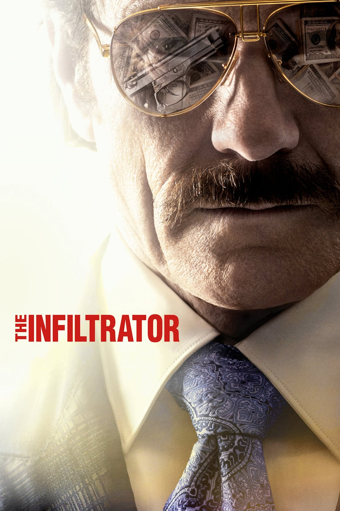
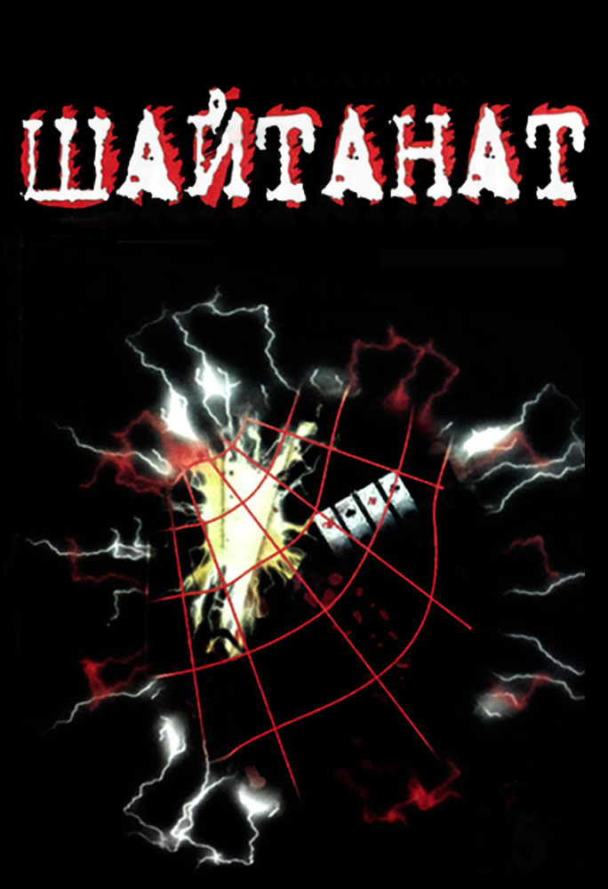

LEGEND
Genre: Biographical crime thriller film
Realese date: 9 September 2015
Brief: The film tells the story of the twins Reggie and Ronnie Cray,the cult figures of the underworld of the UK of the 1960s.The brothers led most influential East End gangster group.Their track record includes armed robbery,racketeering,arson,assassination,murder, and their own nightclub,which even hollywood celebrities were arriving at.Among their victims are crime bosses Jack McVitti and George Cornell.
LOVING PABLO
Genre: Biography, drama, crime
Realese date: 2018, Spain
Brief: Pablo did not have the opportunity to receive a brilliant education. So boy had to very try to find the path to survival. So a clever young man chose a life of crime, because it allowed beneficial to "sell" their exceptional personal qualities. Mr. Escobar managed not only to get rich, but also to become a respected person in narrow circles. To learn more about his rich biography, the living legend comes a cute journalist with which the gallant cavalier tied a passionate relationship. What is hidden behind the harsh image of an underground businessman?

THE INFILTRATOR
Genre: Crime, thriller
Realese date: 13 July 2016, USA
Brief:Federal agent Bob Mazur, an expert on the introduction of criminal groups, aims to uncover the scheme of money laundering drug cartel Pablo Escobar.In one team with a hot-tempered operative Emir Abreu, as well as budding agent Katie Erts, who plays the role of a fake bride of Bob, he will have to turn the most risky operation under cover in history.
WOLF OF WALL STREET
Genre:Biography,Comedy,Crime
Realese date:17 December 2013, New York
Brief:Jordan Belfort founded one of the largest brokerage houses in 1987, but ten years later was convicted of money laundering and a number of other financial crimes.The author coped with alcohol and drug addiction, developed during the fraud on Wall Street, wrote two books and now lectures on how achieve success.

KINGDOM OF DEMONS
Genre: Crime, thriller, drama, serial
Realese date:1998, Uzbekistan
Brief:The main hero Asadbek is king of the crime world, and the film about his life.